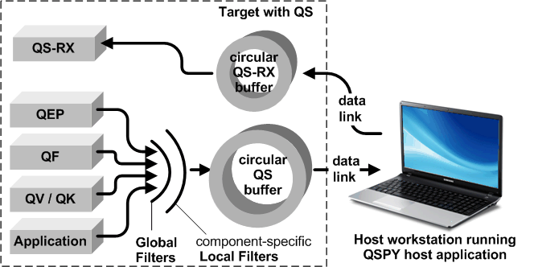
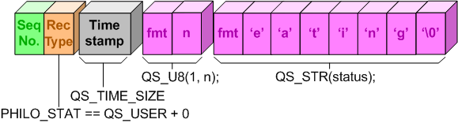

QTools
7.4.0
Collection of Host-Based Tools
The target-resident component of the QP/Spy™ tracing system is called QS. The purpose of QS is to provide facilities for instrumenting the target code so it will produce an interesting real-time trace from code execution. In this sense it is similar to peppering the code with printf statements. However, the main difference between QS and printf is where the data formatting and sending is done. When you use printfs, the data formatting and sending occur in the time-critical paths through your embedded code. In contrast, the QS target-resident component inserts raw binary data into the QS ring buffer, so all the time-consuming formatting is removed from the Target system and is done after the fact in the Host. Additionally, in QS, data logging and sending to the Host are separated so that the target system can typically perform the transmission outside of the time-critical path, for example in the idle processing of the target CPU.
The QS target component consists of the QS ring buffer, the QS filters, as well as the instrumentation added to the QP framework and the application, as shown in figure below. Additionally, the QS target component contains the receive-channel (QS-RX) with its own receive buffer, which can receive data from the QSPY host component.

A nice byproduct of removing the data formatting from the Target is a natural data compression. For example, formatted output of a single byte takes two hexadecimal digits (and 3 decimal digits), so avoiding the formatting gives at least a factor of two in data density. On top of this natural compression, QS uses such techniques as data dictionaries, and compressed format information, which in practice result in a compression factor of 4-5 compared to the expanded human-readable format.
Most QS trace records produced by QS are time-stamped with a high-resolution counter (the resolution depends on the availability of a hardware timer-counter in the Target, but typically provides sub-microsecond granularity). QS provides an efficient API for obtaining platform-specific timestamp information. Given the right timer-counter resource in your Target system, you can provide QS with as precise timestamp information as required. The size of the timestamp is configurable to be 1, 2, or 4 bytes (see #QS_TIME_SIZE).
The QP/C and QP/C++ frameworks contain the QS instrumentation for tracing the interesting occurrences within the frameworks, such as state machine activity (dispatching events, entering/exiting a state, executing transitions, etc.), active object activity (allocating events, posting/publishing events, time events, etc.), and more. All this instrumentation reserves 100 predefined QS trace records, which are enumerated in QSpyRecords. These QS records have predefined (hard-coded) structure both in the QS target-resident component and in the QSPY host-based application. See also the documentation of the human-readable output generated from the predefined QS records.
In addition to the predefined QS records, you can add your own, flexible, application-specific trace records, which are not known in advance to the QSPY host-resident component. You can think of the application-specific records as an equivalent to printf() but with much less overhead. The following code snippet shows an example of an application-specific QS record from your embedded code:
As you can see from the example above, an application-specific trace record always begins with QS_BEGIN_ID(), followed by a number of application-specific data elements, followed by QS_END().
The biggest challenge in supporting flexible "application-specific" trace records is to provide the data type information with the data itself, so that QSPY "knows" how to parse such records and move on to the next data element within the record. The figure below shows the encoding of the application-specific trace record from the previous listing.

The application-specific trace record, like all QS records, starts with the Sequence Number and the Record-Type. Every application-specific trace record also contains the timestamp immediately following the Record Type. The number of bytes used by the timestamp is configurable by the macro #QS_TIME_SIZE. After the timestamp, you see the data elements, such as a byte (QS_U8()) and a string (QS_STR()). Each of these data elements starts with a fmt (format) byte, which actually contains both the data-type information (in the lower nibble) and the format width for displaying that element (in the upper nibble). For example, the data element QS_U8(1, n) will cause the value 'n' to be encoded as uint8_t with the format width of 1 decimal digit.
As shown in the listing above, typically the application-specific records are enclosed with the QS_BEGIN_ID() / QS_END() pair of macros. This pair of macros disables interrupts at the beginning and enables them again at the end of each record. Occasionally you might want to generate trace data from within already-established critical sections or ISRs. In such rare occasions, you would use the macros QS_BEGIN_NOCRIT() / QS_END_NOCRIT() to avoid nesting of critical sections.
The record-begin macro QS_BEGIN_ID() takes two arguments. The first argument (e.g., PHILO_STAT) is the enumerated Record-Type, which is used in the global filter and is part of each record header.
The second argument (e.g., AO_Philo[n]->prio in the example above) is used for the local filter, which allows you to selectively log only specific objects. The code snippet shows an example of an application-specific trace record, including use of the second parameter of the QS_BEGIN_ID() macro.
The following examples show the QS application-specific trace records as C code on the left, and the output generated by the QSPY host application from these records on the right. The examples assume that the QS dictionaries have been produced for the Record-Types and function/object pointers used.
| Trace Record | QSPY output |
|---|---|
| |
| |
| |
0991501750 FP_DATA 3.141500e+003 -2.7182818280e+005NOTE: produced only when QS-ID QS_AP_ID + 1 is enabled in the QS Local Filter |
The following table summarizes the supported data elements that can be used inside the Application-Specific trace records:
| Data Element | Example | Comments |
|---|---|---|
| QS_U8() | QS_U8(0, n); | Outputs a uint8_t integer with format "%u" |
| QS_I8() | QS_I8(3, m); | Outputs a int8_t integer with format "%3d" |
| QS_U16() | QS_U16(5, n); | Outputs a uint16_t integer with format "%5u" |
| QS_I16() | QS_I16(0, m); | Outputs a int16_t integer with format "%d" |
| QS_U32() | QS_U32(QS_HEX_FMT, n); | Outputs a uint32_t integer with format "%8X" |
| QS_I32() | QS_I32(0, m); | Outputs a int32_t integer with format "%d" |
| QS_U64() | QS_U32(0, n); | Outputs a uint32_t integer with format "%2"PRIi64 |
| QS_F32() | QS_F32(0, 3.1415F); | Outputs a 32-bit float with format "%7.0e"(zero digits after the comma) |
| QS_F64() | QS_F64(4, sqrt(2.0)); | Outputs a 64-bit double with format "%12.4e" (4 digits after the comma) |
| QS_STR() | QS_STR("Hello") | Outputs a zero-terminated string with format "%s" |
| QS_MEM() | QS_MEM(&my_struct, 16) | Outputs 16 bytes of memory starting from &my_struct.The bytes are output using the hex format "%02X" |
| QS_OBJ() | QS_OBJ(&my_obj); | Outputs an object pointer. If an object dictionary for the object exists, QSPY will display the symbolic name of the object |
| QS_FUN() | QS_OBJ(&foo); | Outputs a function pointer. If a function dictionary for the function exists, QSPY will display the symbolic name of the function |
| QS_SIG() | QS_SIG(TIMEOUT_SIG, (void*)0); | Outputs a signal. If signal dictionary for the signal exists, QSPY will display the symbolic name of the signal |
Obviously, QS cannot completely eliminate the overhead of software tracing. But with the fine-granularity filters available in QS, you can make this impact as small as necessary. For greatest flexibility, QS uses two complementary levels of filters: Global Filter and Local Filter described below. The combination of such two complementary filtering criteria results in very selective tracing capabilities.
The Global Filter is based on trace Record-Types associated with each QS record (see QSpyRecords). This filter allows you to disable or enable each individual Record-Type or a whole group of QS records. For example, you might enable or disable QS_QEP_STATE_ENTRY (entry to a state), QS_QEP_STATE_EXIT (exit from a state), QS_QEP_INIT_TRAN (state transition), QS_QF_ACTIVE_POST (event posting), QS_QF_PUBLISH (event publishing), and all other pre-defined and application-specific event types. This level works globally for all state machines, active objects, and time event objects in the entire system.
QS provides a simple interface, QS_GLB_FILTER(), for setting and clearing individual Record-Types as well as groups of Record-Types in the Target code. The following table summarizes the Record-Types and groups of Record-Types that you can use as arguments to QS_GLB_FILTER().
Here are some examples of setting and clearing the QS Global Filter with QS_GLB_FILTER():
The Local Filter is based on QS-IDs associated with various objects in the Target memory. The QS-IDs are small integer numbers, such as the unique priorities assigned to QP Active Objects, but there are more such QS-IDs which you can assign to various objects. Then, you can set up the QS Local Filter to trace only a specific groups of such QS-IDs.
The main use case for QS Local Filter is an application where certain active objects are very "noisy", and would overwhelm your trace. The QS Local Filter allows you to silence the "noisy" active objects and let the others through.
Please note that the QS Global Filter will not do the trick, because you don't want to suppress all QS records of a given Record-Type. Instead, you want to suppress only specific objects.
QS provides a simple interface, QS_LOC_FILTER(), for setting and clearing individual QS-IDs as well as groups of QS-IDs in the Target code. The following table summarizes the QS-IDs and groups of QS_IDs that you can use as arguments to QS_LOC_FILTER().
| QS-ID /Group | Range | Example | Comments |
|---|---|---|---|
| 0 | 0 | always enabled | |
| QS_AO_IDS | 1..64 | QS_LOC_FILTER(QS_AO_IDS); QS_LOC_FILTER(-QS_AO_IDS); QS_LOC_FILTER(6); QS_LOC_FILTER(-6); QS_LOC_FILTER(AO_Table->prio) | Active Object priorities |
| QS_EP_IDS | 65..80 | QS_LOC_FILTER(QS_EP_ID + 1U); | enable Event-Pool #1 |
| QS_EQ_IDS | 81..96 | QS_LOC_FILTER(QS_EQ_ID + 1U); | enable Event-Queue #1 |
| QS_AP_IDS | 97..127 | QS_LOC_FILTER(QS_AP_ID + 1U); | enable Application Specific QS_ID |
Here are some examples of setting and clearing QS Local Filter with QS_LOC_FILTER():
QS maintains a set of Current Objects to which it applies commands received through the QS-RX channel. For example, the event-post operation is applied to the current Active Object, while the peek/poke/fill operations are applied to the current Application Object. QS maintains the following Current Objects:
By the time you compile and load your application image to the Target, the symbolic names of various objects, function names, and event signal names are stripped from the code. Therefore, if you want to have the symbolic information available to the QSPY host-resident component, you need to supply it somehow to the software tracing system.
The QS Target-resident component provides special dictionary trace records designed expressly for providing the symbolic information about the target code in the trace itself. These "dictionary records" are very much like the symbolic information embedded in the object files for the traditional single-step debugger. QS can supply five types of dictionary trace records:
The dictionary trace records are typically generated during the system initialization and this is the only time they are sent to the QSPY host component. It is your responsibility to code them in (by means of the QS_???_DICTIONARY() macros). The following code snippet provides some examples of generating QS dictionaries:
The QS target component contains the receive-channel (QS-RX), which can receive data from the QSPY host application. The QS-RX channel provides the following services: